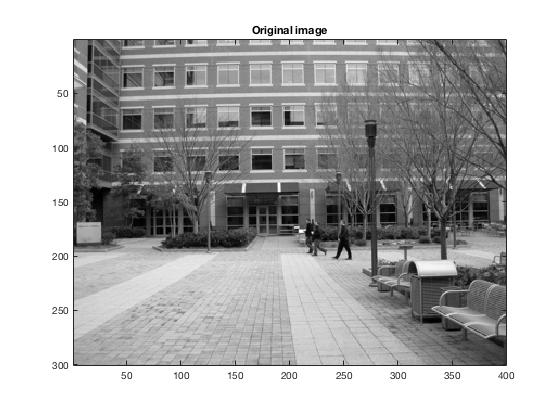
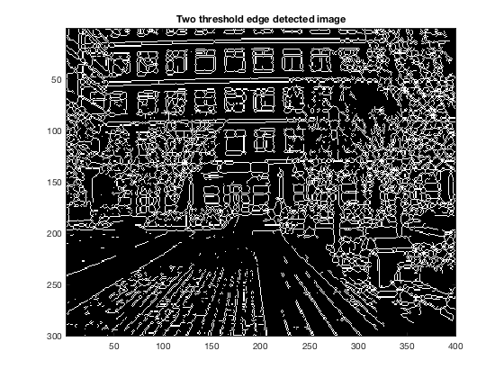

%========================== % Name: hw2_4.m % % Author: Kairi Kozuma % %========================== %============================ hysteresisEdges ============================ % % script hysteresisEdges.m % % % Loads the edgethresh.mat Matlab file (make sure to have it in your % path or your current directory) and then applies hystersis-based % edge finding to identify which parts of the image reflect edge-like % structures. % %============================ hysteresisEdges ============================ % % Name: hysteresisEdges.m % % Author: Patricio A. Vela, pvela@gatech.edu % % Created: 2014/01/18 % Modified: 2014/01/18 % %============================ hysteresisEdges ============================ %--[1] Load the edgethresh Matlab file. load('edgethresh.mat'); I = double(I); % Convert to double or crazy stuff happens. highT = 145; lowT = 120; fprintf('High threshold: %d\nLow threshold: %d\n', highT, lowT); %--[2] Run the edge finding function to get a binary image. detect = edgefind(I, highT, lowT); %--[4] Plot the image and also visualize the detected edge locations. figure(1); imagesc(I); colormap('gray'); title('Original image'); axis image; figure(2); imagesc(detect); colormap('gray'); title('Two threshold edge detected image'); fprintf('The results are better than using a single\n'); fprintf('threshold, since two thresholds captures more edges that have lower\n'); fprintf('contrast with its environment. For example, the image obtained from\n'); fprintf('two thresholds shows more of edges in the trees and sidewalk, while\n'); fprintf('the edge detection with one threshold does not capture them.'); %================================ edgefind =============================== % % edgeIm = edgefind(I, highT, lowT) % % INPUTS: % I - the image (should be double!) % highT - the upper threshold. % lowT - the lower threshold. % % OUTPUTS: % escore - the edge score. % %================================ edgefind =============================== % % Name: edgefind.m % % Author: Patricio A. Vela, pvela@gatech.edu % % Created: 2014/01/17 % Modified: 2014/01/17 % %================================ edgefind =============================== function [detected] = edgefind(I, highT, lowT) %-- Compute the gradient of the image. cdx = [-1 0 1]/2; cdy = cdx'; dIdx = imfilter(I, cdx, 'replicate'); dIdy = imfilter(I, cdy, 'replicate'); %-- Compute the edge score (sum of squares of derivatives). score = dIdx.^2 + dIdy.^2; %--Perform hysteresis with the upper and lower score thresholds. highDetect = score > highT ; % Apply the upper threshold first. [i, j] = find(highDetect); % Using find, get indices of detected points. lowDetect = score > lowT; % Apply the lower threshold second. detected = bwselect(lowDetect, i, j); % Using bwselect with the detected points on the % low detection binary image, get more candidates. detected = bwmorph(detected, 'thin', inf); % Apply some thinning to get skinny edge lines. end
High threshold: 145 Low threshold: 120 Warning: Ignoring out-of-range input coordinates. The results are better than using a single threshold, since two thresholds captures more edges that have lower contrast with its environment. For example, the image obtained from two thresholds shows more of edges in the trees and sidewalk, while the edge detection with one threshold does not capture them. 